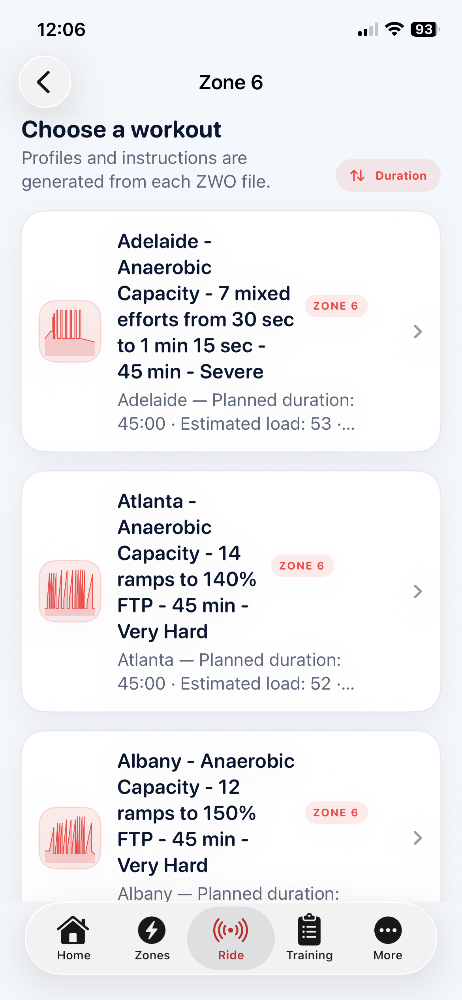
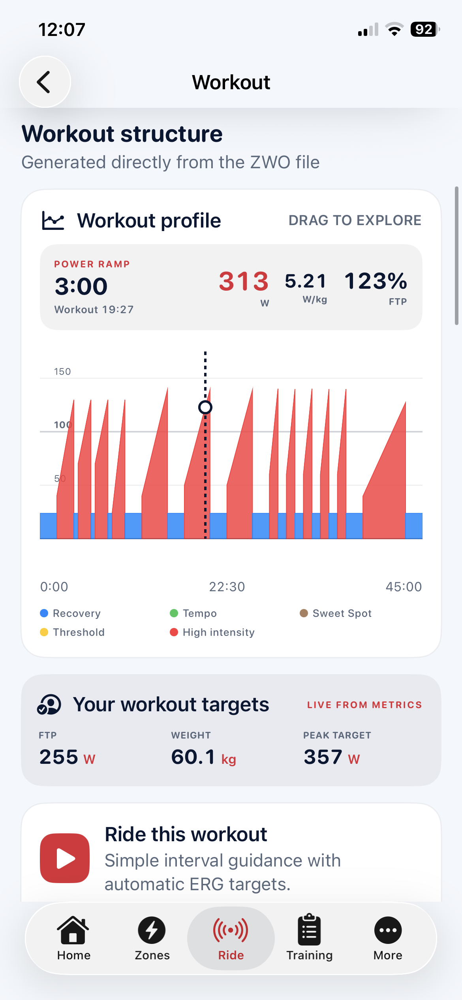

03
Choose
Start with the purpose of the workout.
Browse structured sessions by training zone, compare their shape, duration and estimated load, then see how every interval translates into targets based on your own FTP and body weight.
Training purposeProfile thumbnailsDurationEstimated loadPersonalised targets
01
Choose
Find a workout by the adaptation you want.
Browse a growing library organised by training zone. Descriptive names, duration, estimated load, intensity and miniature profiles make comparison quicker than guessing from an abstract workout title.
- Sort by duration, estimated load or alphabetically
- Workouts from recovery through anaerobic capacity
- FTP test protocols kept in their own section
- ZWO files translated into readable workout structure


02
Preview
See the shape of the work before committing to it.
Explore the workout graph interval by interval. Duration, watts, W/kg and percentage of FTP are calculated from the rider’s current profile, while the original structure remains visible and understandable.
Next: Connect
Turn the selected workout into a controlled ride.
Connect a compatible trainer and heart-rate monitor, then choose ERG control or a freer Passive ride.